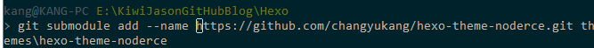

如何保存submodule的修改
背景
个人使用Vundle管理插件，并且安装了oh-my-zsh，因为这种安装方式是git clone原作者的库到本地，所以可以实时跟踪作者的更新；我在使用插件时，会做一些个性化修改，但是这些修改不能提交到github，只能本地保存；
更进一步的需求是：将.vim使用dotfiles方式托管到github上，并且将自己对于插件的修改也托管到github上去;这样就要在dotfiles下建个仓库，并push到github上。
出现的问题：上述想法在实施的过程中，无法全部git add，个人做过修改的插件（每个插件目录都是一个git库），就会出现无法跟踪，所有git add的方式，都添加不进去。那这样我个人做的修改就无法push到github远端仓库了。
解决过程
首先想到使用submoudle的方式来添加插件。
插件本身就是一个git库，将其以子模块的方式添加进去，但是还有个问题，子模块的库是人家原作者的，你无权push，修改还是在本地。
那又想起一个方法：将原作者的库fork下来，添加子模块时，添加自己fork下来的库，那么你对这个库是有权push的，那么你把修改push到这个库上，并不会影响原作者的主分支，这样就实现了将你的.vim里面Vundle安装的插件以dotfiles托管到github的目的，并且将自己的修改push到了远端仓库。更进一步，如果你的个人配置真心不错，你还可以pull request，请原作者审核一下，将你的修改merge过去，为开源做贡献！
添加子模块遇到的问题
想法是美好的，现实却很残酷，添加过程各种问题。
首先，windows下添加的子模块在远端仓库对应目录为灰色，无法链接，这个原因已在“Windows下submodule添加失败的解决方法”里描述过了。
其次，添加的明明是自己fork的库，但是在对应插件目录git remote -v看到的却还是原作者的仓库地址。
后来想想，可能是原来自己用作者的库地址添加过一次submodule，已经有了残留，实际上，这种情况下再添加你自己fork的库为submodule时，会有提示：
提示已经有一个remote在你想添加为子模块的本地目录中，并且如果想使用那个，就用--force选项，如果想自己定义，就用--name。确实，自己原来添加过一次，并且原来的目录中git remote -v可以看到origin地址是原作者的库地址。怎么办呢？使用--name选项似乎也不行，添加不成功，不知道是否书写方法不对？

解决方法
去那个目录，
git remote remove origin，将那个origin删除，可单是这个似乎不行；这样搞了之后，引出上面
git directory *** is found locally with remote: origin的问题。删除
.git/modules/mysubmodulefolder（这里替换成上面提示的已经有orgin地址的那个目录，也就是你想添加子模块到的目录）
删除后，再根据删除submodule的方法，将各种配置清理干净（主要是.gitmodules和.git/config里的submodule信息以及子模块的存放目录），就可以再次添加submodule了，这次大功告成。
补充
另外提一点，子模块提交和push都要在子模块所在目录进行：
子模块修改提交成功后，返回你自己的库，git add，发现可以添加上了：